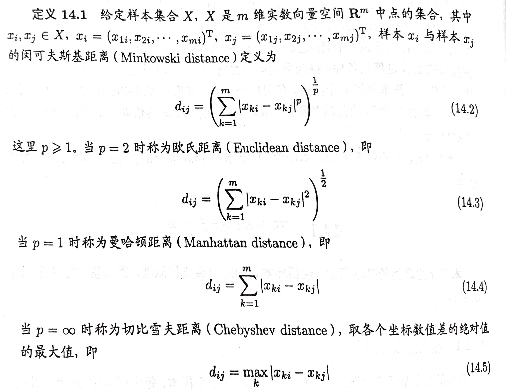
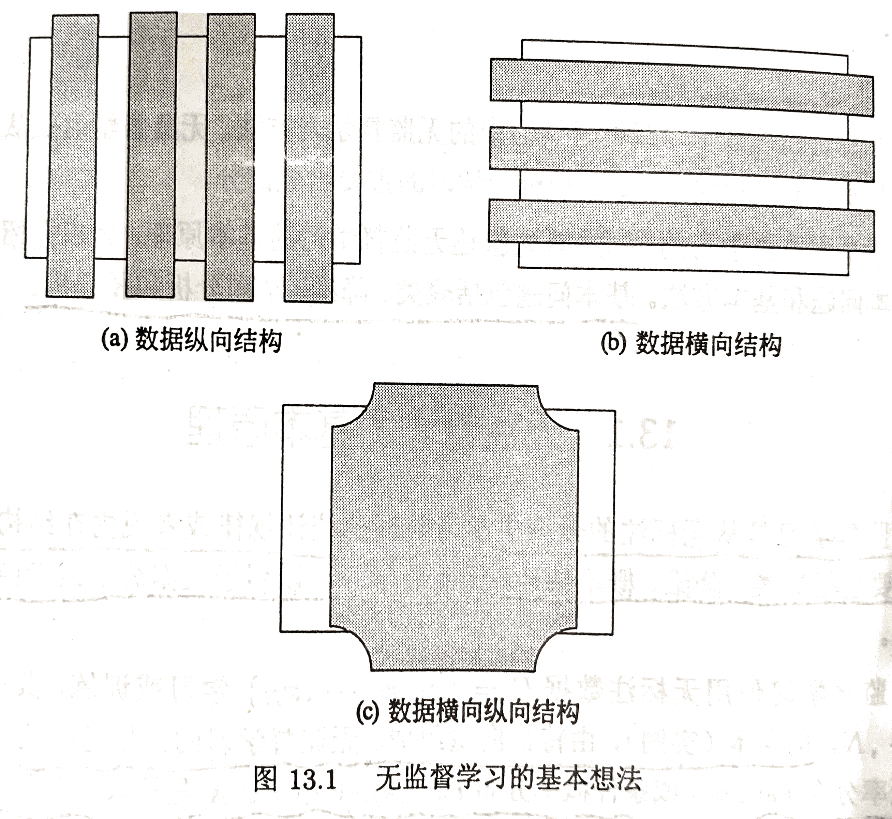
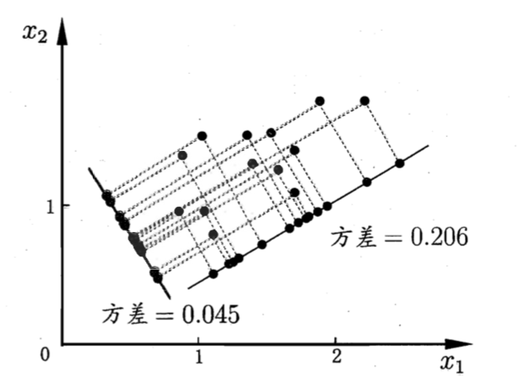
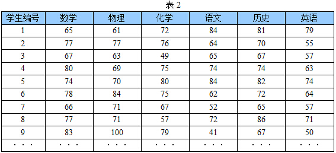
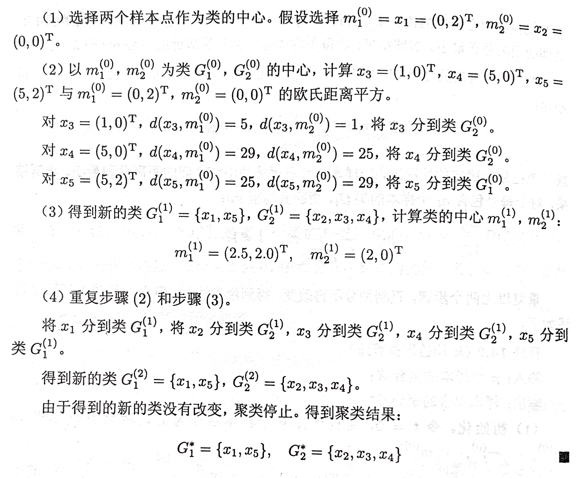
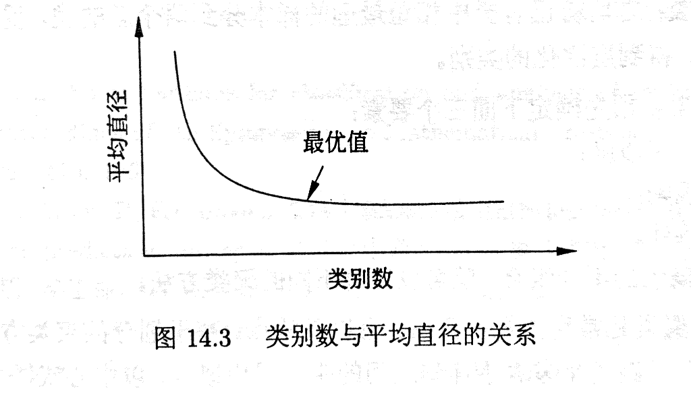

《统计学习方法》学习
《统计学习方法》学习之十二：聚类方法
12. 聚类方法
聚类是针对给定的样本，依据它们特征的相似度或距离，将其归并到若干个“类”或“簇”的数据分析问题。一个类是样本的一个子集。直观上，相似的样本聚集在相同的类，不相似的样本分散在不同的类。这里，样本之间的相似度或距离起着重要作用。
聚类的目的是通过得到的类或簇来发现数据的特点或对数据进行处理，在数据挖掘、模式识别等领域有着广泛的应用。聚类属于无监督学习，因为只是根据样本的相似度或距离将其进行归类，而类或簇事先并不知道。
聚类算法很多，本章介绍两种最常用的聚类算法：层次聚类和 k 均值聚类。层次聚类又有聚合（自下而上）和分裂（自上而下）两种方法。聚合法开始将每个样本各自分到一个类；之后将相距最近的两类 合并，建立一个新的类，重复此操作直到满足停止条件；得到层次化的类别。分裂法开始将所有样本分到一个类；之后将已有类中相距最远的样本分到两个新的类，重复此操作直到满足停止条件：得到层次化的类别。k 均值聚类是基于中心的聚类方法，通过迭代，将样本分到 k 个类中，使得每个样本与其所属类的中心或均值最近；得到 k 个"平坦的"、非层次化的类别，构成对空间的划分。
12.1. 聚类的基本概念
12.1.1. 相似度或距离
聚类的核心概念是相似度或距离，有多种相似度或距离的定义。因为相似度直接影响聚类的结果，所以其选择是聚类的根本问题。具体哪种相似度更合适取决于应用问题的特性。
1. 闵可夫斯基距离
在聚类中，可以将样本集合看作是向量空间中点的集合，以该空间的距离表示样本之间的相似度。常用的距离有闵可夫斯基距离，特别是欧式距离。闵可夫斯基距离越大相似度越小，距离越小相似度越大。

2. 马哈拉诺比斯距离
马哈拉诺比斯距离，简称马氏距离，也是另一种常用的相似度，考虑各个分量（特征）之间的相关性并与各个分量的尺度无关。马哈拉诺比斯距离越大相似度越小，距离越小相似度越大。

当 为单位矩阵时，即样本数据的各个分量互相独立且各个分量的方差为 1 时，由上述的 可知马氏距离就是欧式距离，所以马氏距离是欧式距离的推广。
3. 相关系数
样本之间的相似度也可以用相关系数来表示。相关系数的绝对值越接近于 1，表示样本越相似；越接近于 0，表示样本越不相似。
4. 夹角余弦
样本之间的相似度也可以用夹角余弦来表示。夹角余弦越接近于 1，表示样本越相近；越接近于 0，表示样本越不相似。

由上述定义看出，用距离度量相似度时，距离越小样本越相似；用相关系数时，相关系数越小样本越相似。注意不同相似度度量得到的结果并不一定一致。参照下图：

从上图可以看出，如果从距离的角度看，A 和 B 比 A 和 C 更相似；但从相关系数的角度看，A 和 C 比 A 和 B 更相似。所以，进行聚类时，选择适合的距离或相似度非常重要。
12.1.2. 类或簇
通过聚类得到的类或簇，本质是样本的子集。如果一个聚类方法假定一个样本只能属于一个类，或类的交集为空集，那么该方法称为**硬聚类(hard clustering)方法。否则，如果一个样本可以属于多个类，或类的交集不为空集，那么该方法称为软聚类(soft clustering)**方法。本章只考虑硬聚类方法。
用 表示类或簇(cluster)，用 表示类中的样本，用 表示 中样本的，用 表示样本 与样本 之间的距离。类或簇有多种定义，下面给出几个常见的定义。

以上四个定义，第一个定义最常用，并且由它可推出其他三个定义。
类的特征可以通过不同的角度来刻画，常用的特征有下面的三种。


12.1.3. 类与类之间的距离

12.2. 层次聚类
层次聚类假设类别之间存在层次结构，将样本聚到层次化的类中。层次聚类又有聚合或自下而上聚类、分裂或自上而下聚类两种方法。因为每个样本只属于一个类，所以层次聚类属于硬聚类。
聚合聚类开始将每个样本各自分到一个类：之后将相距最近的两类合并，建立一个新的类，重复此操作直到满足停止条件；得到层次化的类别。分裂聚类开始将所有样本分到一个类；之后将已有类中相距最远的样本分到两个新的类，重复此操作直到满足停止条件；得到层次化的类别。本书只介绍聚合聚类。
聚合聚类的具体过程如下：对于给定的样本集合，开始将每个样本分到一个类；然后按照一定规则，例如类间距离最小，将最满足规则条件的两个类进行合并；如此反复进行，每次减少一个类，直到满足停止条件，如所有样本聚为一类。
由此可知，聚合聚类需要预先确定下面三个要素：
- 距离或相似度；
- 合并规则；
- 停止条件。
根据这些要素的不同组合，就可以构成不同的聚类方法。距离或相似度可以是闵可夫斯基距离、马哈拉诺比斯距离、相关系数、夹角余弦。合并规则一般是类间距离最小，类间距离可以是最短距离、最长距离、中心距离、平均距离。停止条件可以是类的个数达到阈值（极端情况类的个数是 1）、类的直径超过阈值。
层次聚类的例子：

12.3. k 均值聚类
k 均值聚类是基于样本集合划分的聚类算法。k 均值聚类将样本集合划分为 k 个子集，构成 k 个类，将 n 个样本划分到 k 个类中，每个样本到其所属类的中心的距离最小。每个样本只能属于一个类，所以 k 均值聚类是硬聚类。
12.3.1. 模型
更多内容详见书籍。
12.3.2. 策略
更多内容详见书籍。
12.3. 算法
k 均值聚类的算法是一个迭代的过程，每次迭代包括两个步骤。首先选择 k 个类的中心，将样本逐个指派到与其最近的中心的类中，得到一个聚类结果；然后更新每个类的样本的均值，作为类的新的中心；重复上述步骤，知道收敛为止。
例子：


更多内容详见书籍。
12.3.4. 算法特性
1. 总体特点
k 均值聚类有以下特点：基于划分的聚类方法；类别数 k 事先指定；以欧氏距离平方表示样本之间的距离，以中心或样本的均值表示类别；以样本和其所属类的中心之间的距离的总和为最优化的目标函数；得到的类别是平坦的、非层次化的；算法是迭代算法，不能保证得到全局最优。
2. 收敛性
k 均值聚类属于启发式方法，不能保证收敛到全局最优，初始中心的选择会直接影响聚类结果。注意，类中心在聚类的过程中会发生移动，但是往往不会移动太大，因为在每一步，样本被分到与其最近的中心的类中。
3. 初始类的选择
选择不同的初始中心，会得到不同的聚类结果。
4. 类别数 k 的选择
k 均值聚类中的类别数 k 值需要预先指定，而在实际应用中最优的 k 值是不知道的。解决这个问题的一个方法是尝试用不同的 k 值聚类，检验各自得到聚类结果的质量，推测最优的 k 值。聚类结果的质量可以用类的平均直径来衡量。一般地，类别数变小时，平均直径会增加；类别数变大超过某个值以后，平均直径会不变；而这个值正 是最优的 k 值。下图说明类别数与平均直径的关系。实验时，可以采用二分查找， 快速找到最优的 k 值。
